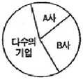

패션머천다이징산업기사 (2011-08-21 기출문제)
1과목: 패션마케팅
1. 패션 판매촉진 도구 중 VMD의 장점으로 옳은 것은?
- 장기적으로 패션제품이나 서비스에 대한 정보를 제공할 수 있다.
- 구매시점에서 소비자들의 구매동기를 자극할 수 있다.
- 비용을 들이지 않고 정보매체의 기사나 뉴스를 통해 제품을 알릴 수 있다.
- 대중적인 활동을 통해 회사의 이미지를 호의적으로 창출할 수 있다.
(정답률: 알수없음)

2. 표적시장을 선정하여 마케팅 활동을 하게 되었을 경우 이점이 아닌 것은?
- 고객의 폭을 넓힐 수 있다.
- 고객을 한층 더 만족시킬 수 있다.
- 마케팅 이념의 실현이 용이하다.
- 자사의 경쟁상 우위 확립이 가능해진다.
(정답률: 알수없음)
3. 마케팅 환경 중 내적환경에 해당되는 것은?
- 마케팅 믹스
- 소비자
- 경쟁업체
- 자사의 경쟁상 우위 확립이 가능해진다.
(정답률: 알수없음)
4. 소비자의 구매행동에 관한 설명 중 옳은 것은?
- 고관여 상품이면서 최초로 구매를 할 경우는 상표충성적인 구매행동을 하게 된다.
- 고관여 상품이면서 반복구매를 하게 될 경우는 복잡한 의사결정을 통해 구매를 하게 된다.
- 저관여 상품의 반복구매 시 보편적으로 관성적 구매를 하게 된다.
- 저관여 상품의 최초 구매시 소비자는 복잡한 의사결정을 하게 된다.
(정답률: 알수없음)
5. 디자인 개발에 포함되는 개념이 아닌 것은?
- 소재기획
- 디자인 컨셉 설정
- 색채기획
- 가격 및 수량결정
(정답률: 알수없음)
6. 다음 중 인구통계적 시장세분화의 주요변수가 아닌 것은?
- 소득
- 직업
- 라이프스타일
- 종교
(정답률: 알수없음)
7. 마케팅믹스에서 판매촉진 활동에 해당되지 않는 것은?
- 홍보
- 인적판매
- 광고
- 유통정책
(정답률: 알수없음)
8. 단위당 원가에 일정률의 마진을 더해 판매가를 결정하는 가격경정법은?
- 원가기산 가격결정
- 목표이익 가격결정
- 소비자중심 가격결정
- 경쟁제품중심 가격결정
(정답률: 알수없음)
9. 패선머천다이징에서 적절히 계획해야 할 5R에 해당되지 않는 것은?
- 적절한 장소(right place)
- 적절한 시간((right time)
- 적절한 양(right quantity)
- 적절한 광고(right advertising)
(정답률: 알수없음)
10. 고객이 원하는 제품과 서비스를 지속적, 체계적으로 제공하여 고객의 가치를 극대화하여 기업의 수익성을 높이고자 하는 패션유통정보는?
- CRM
- SCM
- TQM
- STP
(정답률: 알수없음)
11. 상품의 그레이드 및 패션수용도에 의한 상품분류가 틀린 것은?
- 프레스티지 상품-이미지 향상을 위한 디스플레이 상품
- 모드 상품-현재 유행중인 상품
- 테스트 마켓 상품-새로운 스토리의 상품
- 슬리핑 상품-팔리는 상태가 급속히 둔화되고 있는 상품
(정답률: 알수없음)
12. 상품이나 패션에 관한 전문 지식을 가지고 소비시장의 동향을 정확하게 파악하여 적절한 상품의 구매를 담당하는 패션산업부분의 스페셜리스트는?
- 디스플레이 디자이너(display designer)
- 스타일리스트(stylist)
- 패션 바이어(fashion buyer)
- 패션 컨버터(fashion converter)
(정답률: 알수없음)
13. 유명상표의 의류업체나 디자이너, 백화점 또는 전문점의 잉여상품이나 비정상품을 처분하기 위한 직영형태로 운영하는 곳은?
- 아울렛 스토어
- 대리점
- 양판점
- 백화점
(정답률: 알수없음)
14. 의류 제조업체의 상품기획 및 개발로부터 시장도입에 이르기까지의 일련의 마케팅 활동을 수행하는 패션 스페셜리스트는?
- 어패럴 머천다이저
- 리테일 머천다이저
- 코디네이터
- 디자이너
(정답률: 알수없음)
15. 기업이 신제품을 개발할 때 소비자를 참여시켜 고객만족을 이루는 마케팅 기법은?
- 감성 마케팅(semiotic marketing)
- 제휴 마케팅(affiliate marketing)
- 퍼미션 마케팅(permission marketing)
- 프로슈머 마케팅(prosumer marketing)
(정답률: 알수없음)
16. 소비자들의 구매의사결정과정으로 바르게 나열된 것은?
- 필요욕구의 인식→정보의 탐색→대안의 평가→구매의사결정→구매 후 행동
- 정보수집→표적시장선정→컨셉설정→상품구성과 물량기획→디자인개발→가격결정→품평 및 생산 수량결정
- 공업용 패턴제작→그레이딩→마킹→재단→봉제→검사 및 패킹
- 물류창고 입고→수량검사→입고입력→출고
(정답률: 알수없음)
17. 어패럴 머천다이징이 리테일 머천다이징과 구별되는 특성은?
- 소비자 분석
- 소요예측
- 상품 제조
- 상품 판매
(정답률: 알수없음)
18. 다음 중 도입기에 해당되는 브랜드의 고객은?
- 초기선택자
- 수요예측
- 혁신자
- 후기선택자
(정답률: 알수없음)
19. 패션상품의 판매촉진에 있어 매체선택에 대한 내용으로 틀린 것은?
- 인적 의사전달의 경우는 제품의 성격이 고가이며 많은 위험이 지각되는 제품에 효과적이다.
- 인적 의사전달의 경우 의견 선도자의 역할이 중요하다.
- 비인적 의사전달 경로에는 주된 매체들과 분위기, 이벤트 등이 포함된다.
- 비인적 의사전달 경로에는 인쇄매체, 방송매체, 판매원에 의한 판매 등이 해당된다.
(정답률: 알수없음)
20. 기업이 시장성 확보를 위하여 유효전략인 강자의 전략에 해당되는 것은?
- 제품다양화 전략
- 제품원가삭감전략
- 고급품 전략
- 혁신 전략
(정답률: 알수없음)
2과목: 패션소재기획
21. 정부 공인기간이 의류제품의 품질향상과 소비자 보호 및 건전한 유통질서 확립을 위하여 우수생산업체를 선정하여 원부자재의 특성시험과 완제품의 와관검사를 실시하여 우수 생산업체를 선정하여 원부자제의 특성시험과 완제품의 외관검사를 실시하여 우수한 상품에 부착하는 인증제도는?
- 품질보증 마크(Q 마크)
- 중소기업 우수제품 마크
- 에콜로지 마크
- 굳 헬스(Good Health)마크
(정답률: 알수없음)
22. 실의 꼬임 방향에 관한 설명으로 틀린 것은?
- 능직에서 실의 표면 꼬임 방향이 능선 방향과 반대일 경우 능선이 분명히 보인다.
- 합연사에서 상연과 하연의 방향이 같으면 강력이 크게 증가한다.
- 경사와 위사의 꼬임 방향이 같은 것을 사용하면 직물의 조직이 분명하게 된다.
- 수자직의 경우 수자선이 나타나지 않도록 꼬임의 방향을 선택하는 것이 좋다.
(정답률: 알수없음)
23. 다음 중 내추럴하면서 거친듯한 느낌을 주는 대표적인 소재는?
- 견섬유
- 마섬유
- 면섬유
- 양모섬유
(정답률: 알수없음)
24. 다음 중 능직 직물에 해당되지 않는 것은?
- 도스킨(doeskin)
- 진(jean)
- 서지(setge)
- 개버딘(gaberdine)
(정답률: 알수없음)
25. 은면에 변화를 주기 위해 형틀에 눌러 가공한 가죽은?
- 누벅(nubuck)
- 마블(marble)
- 아닐린(aniline)
- 엠보혁(embossed)
(정답률: 알수없음)
26. 다음 중 면섬유의 특징이 아닌 것은?
- 장시간 일광에 노출되면 점차 강도가 늘어난다.
- 습윤강도가 크고 내세탁성이 좋다.
- 비중이 1.54로 무거운 섬유에 속한다.
- 산에 의해서 쉽게 분해된다,
(정답률: 알수없음)
27. 실에 대한 설명으로 틀린 것은?
- 단사를 두가닥 이상 합하여 꼬임을 줄 때 꼬임이 서로 반대인 것을 순연사라 한다.
- 실의 꼬임 수는 일의 직경과 관련되며 굵은 실일수록 꼬임수가 적다.
- 강연사는 실의 꼬임수가 500~1,000이며 꼬임의 각도가 5~13°이다.
- 넵사는 기본이 되는 실과 가른 색상의 섬유덩어리가 점으로 뭉쳐 있는 실이다.
(정답률: 알수없음)
28. 의류업체의 소재기획 단계에 해당하지 않는 것은?
- 이미지맵 구성
- 컬러맵 구성
- 원형 개발
- 정보 수집
(정답률: 알수없음)
29. 양모섬유에 대한 설명 중 틀린 것은?
- 수백내지 수천 개의 글루코스(glucose)가 결합되어 있다.
- 주성분은 케라틴(keratin) 이라는 단백질로 되어 있다.
- 다수의 아미노산이 펩티트(pepide) 결합에 의해 이루어진 중합체이다.
- 스시틴결합과 조염결합 같은 분자사슬과 분자사슬 사이를 화학결합에 의햐 묶어주고 가교결합으로 되어 있다.
(정답률: 알수없음)
30. 소재 전문회사의 신제품 개발 프로세스 중 제일 먼저 하는 것은?
- 본 생산
- 정보수집 및 용도별 분류
- 견본 샘플 분석
- 시 생산
(정답률: 알수없음)
31. 페미닌한 블라우스 디자인에 맞는 소재 선택이 아닌 것은?
- 폴리에스테르 박지
- 저지
- 조젯
- 실크
(정답률: 알수없음)
32. 코듀로이 소재의 감성분류에 해당되는 것은?
- 건조한(dry)
- 얇은(thin)
- 부드러운(soft)
- 두꺼운(thick)
(정답률: 알수없음)
33. 색상 복합 소재 중 경 위사에 모두 유색을 사용하여 투 톤(tow-tone)의 이미지를 주는 소재는?
- 옥스퍼드(oxford)
- 선 클로스(sun-cloth)
- 샴브레이(chambray)
- 링클프리(wrinkle free)
(정답률: 알수없음)
34. 최근 환경의 변화와 생태계에 대한 소비자의 관심이 고조되면서 등장한 친환경적 소재가 아닌 것은?
- 리오셀(lyocell) 섬유
- 유기재배 면
- 천연착색 면
- 비스코스레이온
(정답률: 알수없음)
35. 소재 전문회사에서 소재기획을 위한 패션정보 수집시기를 연결한 내용으로 틀린 것은?
- 18~24개월 전 : 색상과 소재 정보 수집 및 분석
- 12~18개월 : 트렌드 정보 자료 분석 및 소재와 기본색상 설정
- 12개월 전 : 견본 제작 및 소재 전시회
- 본 시즌 : 소재 수주
(정답률: 알수없음)
36. 소재업체의 소재기획 과정이 아닌 것은?
- 소재방향 설정
- 소재 맵
- 수주
- 원형 개발 및 샘플 제작
(정답률: 알수없음)
37. 섬유제품의 관리에 있어서 세탁 취급표시에 관한 용어가 아닌 것은?
- 세탁기 세탁법
- 건조법
- 다림질
- 대전성
(정답률: 알수없음)
38. 위편성품의 기본 조직에 해당되지 않는 것은?
- 평편
- 펄편
- 타크편
- 고무편
(정답률: 알수없음)
39. 편성물에 대한 설명 중 틀린 것은?
- 횡편기는 좌우로 길게 나열된 편성기계로 주로 스웨터용으로 많이 사용된다.
- 위편 니트의 종류로는 트리코트, 라셀, 밀라니즈가 있다.
- 평편조직은 편성에서 가장 간단한 조직으로 저지 조직이라고도 한다.
- 경편소재는 직물과 비슷한 형태로 안정성이 있다.
(정답률: 알수없음)
40. 엑조틱 이미지 트렌드의 소재로 부적합한 것은?
- 서지
- 하브다에
- 파유
- 개버딘
(정답률: 알수없음)
3과목: 유통관리 및 광고
41. 마케팅 커뮤니케이션을 수립하기 위한 수단 중 패션광고의 장점에 해당되는 것은?
- 대중적 제안으로 많은 사람들이 동일한 메시지를 접할 수 있다.
- 홍보보다 더 진실되고 신뢰감을 준다.
- 즉시 거래를 하도록 분명하게 권유라고 유인한다.
- 단순한 판매관계로부터 깊은 인간관계까지 여러 유형의 관계를 형성할 수 있도록 한다.
(정답률: 알수없음)
42. 독창적인 비주얼 머천다이징을 통한 마케팅 효과로 보기 어려운 것은?
- 상품분류에 의해서 합리적인 배치를 할 수 있다.
- 점포 아이덴티티(store identity)를 형성한다.
- 상품기획에서 판매현장까지 업무의 영역이 광범위하여 추가적인 전문 인력의 공급이 필요하다.
- 접객업무의 비효율성을 방지하고 물류시스템을 효율적으로 운영함으로써 기업이윤을 증대시킨다.
(정답률: 알수없음)
43. 다음 중 바람직한 상품구성에 대한 설명으로 틀린 것은?
- 같은 계열의 상품군 중에서도 여러 단계로 나누어진 확고한 가격선이 설정되어야 한다.
- 동일 가격선의 상품군 중에서 고객의 기호, 연령층, 직업 등의 차이에 따라 상품구성이 이루어질 필요가 없다.
- 소재, 색상, 스타일, 패턴 등 상품의 물리적 측면 등이 강조되면서 전체적으로 유기적인 조합이 이루어져야 한다.
- 전 상품군을 통하여 그 매장이나 브랜드의 독특한 이미지나 사상이 표현되어야 한다.
(정답률: 알수없음)
44. 완사입제도에 대한 설명 중 제조회사가 가질 수 있는 장점에 해당되는 것은?
- 기획에서 생산, 유통을 일관되게 통제하기 쉽다.
- 재고 부담이 없어 이익의 편차가 적다.
- 브랜드 이미지 관리가 쉽다.
- 상권 특성에 따른 물량 배분으로 판매를 극대화할 수 있다.
(정답률: 알수없음)
45. 소매업의 유형 중 자사 제품 또는 재고품을 초염가로 판매하는 소매형태는?
- 아울렛
- 슈퍼마켓
- 편의점
- 전문점
(정답률: 알수없음)
46. 패션상품의 경우 어떤 브랜드가 재킷, 팬츠, 스웨터, 원피스, 티셔츠 등의 상품군을 골고루 갖추어 놓았을 때 일컫는 말은?
- 확장제품이 다양하다.
- 상품의 깊이가 깊다.
- 실체상품이 다양하다.
- 상품의 폭이 넓다.
(정답률: 알수없음)
47. 광고물의 구성 용어 중 카피(copy)의 표제부분에 해당되는 것은?
- 삽화
- 헤드라인
- 로고타입
- 브랜드마크
(정답률: 알수없음)
48. 봄의 영업계획에 대한 설명 중 틀린 것은?
- 신입 여사원을 위한 캠페인 판촉 이벤트 및 가벼운 캐주얼 웨어 특선 이벤트를 구성한다.
- 결혼 시즌이므로 결혼식 참여용 드레스, 수트 등 중의류의 상품갖추기가 필요하다.
- 스포티하고 경쾌한 단품 아이템을 중심으로 타운 스타일 코디네이트 제안의 매장 전개 강화가 효과적이다.
- 전반은 파티 웨어를 제안하고, 후반은 패션잡화, 파티, 선물용 상품의 특집을 전개한다.
(정답률: 알수없음)
49. 상품계획의 정책에 해당되지 않는 것은?
- 판매시기 정책
- 상품의 폭과 깊이 정책
- 가격구성 정책
- 광고 정책
(정답률: 알수없음)
50. 상품전략에서 기업이나 브랜드 및 점포에서 구비해야 할 상품그룹의 종류, 상품구성 등 상품에 대한 전체적인 계획에 해당되는 것은?
- 상품정책
- 사입정책
- 판촉정책
- 유통관리
(정답률: 알수없음)
51. 상품구색을 갖추기 위한 패션제품믹스의 구성요소에 해당되지 않는 것은?
- 제품믹스의 넓이
- 제품믹스의 높이
- 제품믹스의 깊이
- 제품믹스의 길이
(정답률: 알수없음)
52. 고객의 구매시점에 행해지는 광고를 뜻하며, 판매원을 대신하여 상품정보를 알려 줌으로써 편리한 쇼핑이 이루어지도록 지원하고 소비자의 구매를 이끌어 내는 것을 목적으로 하는 수단은?
- POS
- POP
- VMD
- PR
(정답률: 알수없음)
53. 다음 중 광고에 대한 설명으로 틀린 것은?
- 광고매체에는 신문, 잡지, 직접우편, 라디오, TV 등이 있다.
- 광고는 소비자에게 회사의 제품, 서비스에 대한 정보를 제공한다.
- 광고는 보도가치가 있어야 하며, 회사에 의해 통제될 수 없다.
- 광고는 소비자가 원하는 상품을 중점적으로 광고하여 상품판매를 촉진해야 한다.
(정답률: 알수없음)
54. 상품관리방법 중 금액관리(dollar control)에 대한 설명으로 틀린 것은?
- 부문별 관리제도로 경영관리시스템에 의해 조정되어지는 것이다.
- 상품의 흐름을 재정적으로 나타내는 것이다.
- 상품속성에 의한 관리제도로 POS에 의하여 조정된다.
- 단위수량관리에서 일어나는 모든 이동사항을 재정의 개념으로 나타내는 회계방법이다.
(정답률: 알수없음)
55. VMD 전개의 기본요소 설명으로 틀린 것은?
- IP와 PP는 보여주는 역할을 하고, VP는 판매하는 역할을 한다.
- VP의 위치는 고객의 시선이 처음 닿는 쇼윈도나 스테이지를 말한다.
- PP는 분류된 상품의 판매포인트를 보여준다.
- IP는 상품의 사이즈별, 스타일별, 컬러별, 소재별 분류를 말한다.
(정답률: 알수없음)
56. 상품구색계획의 방법 중 ABC 그룹 분석에 있어서 A그룹에 대한 대처방법으로 가장 적당한 것은?
- 소량의 재고량만 유지하도록 한다.
- 구색 부족을 방지한다.
- 최소 재고량만 유지하거나 재고량을 억제한다.
- 최소 LOT로 생산한다.
(정답률: 알수없음)
57. 재고자산 회전율에 대한 설명으로 틀린 것은?
- 회전율이 낮으면 수요변화에 민감하게 대응하기 힘들다.
- 회전율이 낮으면 구매자금이 묶인다.
- 회전율이 높으면 자본으로 인한 수익성이 낮다.
- 회전율이 높으면 품절로 인한 소비자 불만이 있을 수 있다.
(정답률: 알수없음)
58. 패션 유통경로 중 위탁사입제도의 특징으로 옳은 것은?
- 기획에서 생산, 유통을 일관되게 통제하기 쉽다.
- 점주들의 요구가 높은 상품을 집중 생산함에 따라 판매율을 높일 수 있다.
- 재고부담이 없어 이익의 편차가 적다.
- 생산기획과 생산에만 전념할 수 있어 전문화가 가능하다.
(정답률: 알수없음)
59. 비주얼 머천다이징(YMD)의 설명으로 옳은 것은?
- 브랜드 이미지는 감정적인 요인에 크게 작용하므로 소비자에게 강한 메시지를 전달할 수 있다.
- 디스플레이와 개념적 차원이 같다.
- VMD는 건축물의 외관만을 시각적으로 조정하는 것을 말한다.
- 손님이 스스로 찾아오는 매장에서 손님을 기다리는 매장으로 만드는 수법이다.
(정답률: 알수없음)
60. 인터넷 마케팅에서 교차판매(cross selling)에 대한 설명으로 가장 옳은 것은?
- 제품을 보다 많을 고객에게 판매하는 것
- 한 명의 고객에게 다양한 제품을 판매하는 것
- 사이트 여러 곳을 통해 동시에 판매하는 것
- 단기간에 매출을 올릴 수 있는 방법으로 이용하는 것
(정답률: 알수없음)
4과목: 패션디자인론 및 의복구성학
61. 다음 중 일반적인 심지의 선택으로 가장 옳은 것은?
- 탄력성과 수축성이 높은 성질의 심지를 선택한다.
- 표면이 균일하고 평평한 것을 선택한다.
- 겉감과 같은 두께의 것을 선택한다.
- 탄성회복이 더딘 심지를 선택한다.
(정답률: 알수없음)
62. 의복구성에서 다트를 하는 가장 큰 이유는?
- 의복에 활동성을 부여하기 위하여
- 디자인의 포인트로서 응용하기 위하여
- 평면적인 옷감을 입체화시키기 위하여
- 활동성이 많은 부위의 강도를 높이기 위하여
(정답률: 알수없음)
63. 패션의 수평전자이론에 대한 설명으로 옳은 것은?
- 하류층만의 독특한 의상을 상류계층에 전파한다.
- 상류계층의 패션을 낮은 계층에서 모방하면서 전파한다.
- 모든 사회계층의 패션선도지에 의해 거의 동시에 시작된다.
- 1960년대 미니 스커트의 유행과 부츠의 유행을 들수 있다.
(정답률: 알수없음)
64. 톤 인 톤(tone in tone) 배색의 설명으로 옳은 것은?
- 3가지 색의 배색 기법이다.
- 동일 또는 유사한 톤 내에서 색상의 변화를 주는 배색기법이다.
- 단색화법으로 거의 동일 색에 가까운 색을 사용하여 1가지 색으로 보이게 하는 배색 기법이다.
- 2가지 톤의 명도차를 비교적 크기 둔 배색 기법이다.
(정답률: 알수없음)
65. 다음 중 기하학적인 무늬에 해당되지 않는 것은?
- 싱클 스트라이프(single stripe) 무늬
- 페이즐리(paisley) 무늬
- 플레이드(plaid) 무늬
- 체크(check) 무늬
(정답률: 알수없음)
66. 다음 중 후퇴감이 가장 강한 색은?
- 난색
- 한색
- 고채도의 색
- 고명도의 색
(정답률: 알수없음)
67. 바늘의 골모양에 따른 분류 중 니트나 스판 소재의 봉제에 적합한 바늘은?
- Q포인트
- 볼포인트
- 컷팅포인트
- 샤프포인트
(정답률: 알수없음)
68. 다음 중 심지의 종류가 아닌 것은?
- 부직포
- 스테이플 파이버
- 편성물
- 직물
(정답률: 알수없음)
69. 톤(tone)에 대한 설명으로 틀린 것은?
- 명도와 채도를 동시에 직관할 수 있다.
- 색의 상태라는 뜻이다.
- 색채의 3속성의 관계를 합리적ㆍ입체적으로 배열하여 조립한 것이다.
- 배색상의 편리를 도모하기 위하여 여러 가지 명칭을 붙여놓고 있다.
(정답률: 알수없음)
70. 복식의 기능 중 신체 적응을 돕기 위한 기구로, 착용자의 신체를 보호하고, 신체활동의 효율성과 신체적 쾌적감을 증진시키는 기능은?
- 상징적 기능
- 표현적 기능
- 물리적 기능
- 사회적 기능
(정답률: 알수없음)
71. 성인 여성의 피트성이 필요한 상의의 설계를 위한 상의용 체형에 해당되지 않는 것은?
- H Type
- T Type
- A Type
- Y Type
(정답률: 알수없음)
72. 유행의 종류에 대한 설명이 틀린 것은?
- 패드(fad)-갑자기 급격히 퍼지는 타입의 유행
- 패션(fashion)-일반에 널리 퍼지는 큰 유행
- 모드(mode)-선택적인 유행
- 보그(vogue)-인기가 있어 널리 퍼진 유행
(정답률: 알수없음)
73. 다음 중 평화, 젊음, 성장, 미숙함, 유식, 신선함 등의 이미지를 갖는 색은?
- 노랑
- 초록
- 빨강
- 보라
(정답률: 알수없음)
74. 클래식에 대한 설명으로 옳은 것은?
- 유행 확산곡선 상에서 클래식은 사용기간이 짧고 정점이 높다.
- 디자인상의 클래식은 베이직(basic)이라 할 수 있다.
- 클래식은 주로 부유층이 사용하는 것으로 소비자의 폭이 좁다.
- 클래식은 짧은 수명주기와 급격한 확산을 특징으로 한다.
(정답률: 알수없음)
75. 가시성이 높고 시장수명이 짧으며, 의복 디자인의 일부나 장식품류 등 자은 것에 나타나는 것은?
- 패션
- 클래식
- 문화
- 패드
(정답률: 알수없음)
76. 디자인 스케치와 샘플 제조를 지시하는 내용이 기록된 문서로 디자이너에 의해 작성되어 생산부문으로 넘겨지는 것은?
- 디자인 스케치
- 공업용 패턴
- 원단 및 부자재 발주서
- 샘플제조의뢰서
(정답률: 알수없음)
77. 재단을 위한 준비과정으로서 롤 상태의 천을 평면상으로 여러 겹 포개어 펼쳐 놓는 작업은?
- 마킹
- 검단
- 그레이딩
- 연단
(정답률: 알수없음)
78. 우리나라 여성복 상의 치수 호칭의 기본 신체부위가 아닌 것은?
- 가슴둘레
- 허리둘레
- 엉덩이 둘레
- 키
(정답률: 알수없음)
79. 칼라의 종류 중 뒷목 부위에서 세워지는 분량이 전혀 없는 칼라는?
- 셔프칼라
- 플랫칼라
- 스탠딩칼라
- 테일러드칼라
(정답률: 알수없음)
80. 계측 항목의 계측방법에 대한 설명 중 틀린 것은?
- 엉덩이둘레는 엉덩이의 가장 두드러진 부위를 수평으로 돌려서 잰다.
- 유두간격은 좌우 유두점사이의 거리를 잰다.
- 앞길이는 왼쪽 목옆점에서 허리선까지의 직선거리를 잰다.
- 바지길이는 옆허리선부터 발목까지의 길이를 잰다.
(정답률: 알수없음)
5과목: 패션정보분석
81. 라이프스타일에 영향을 주는 요인이 아닌 것은?
- 기업
- 가족
- 개인의 문화
- 준거집단
(정답률: 알수없음)
82. 다음 중 소비자 조사내용에 해당되지 않는 것은?
- 소비문화
- 소비생활
- 스타일경향
- 가치관
(정답률: 알수없음)
83. 패션산업분야에서 라이프스타일 연구를 중요시하는 이유가 아닌 것은?
- 사회적 경향이나 생활의식 동향의 예측
- 브랜드별 특성에 따른 색채경향
- 소비자 행동에 대한 새로운 설명모델의 제시
- 보다 유용한 시장세분화 기준의 기대
(정답률: 알수없음)
84. 리테일 머천다이징 시스템에서 프로모션 전략의 요소인 것은?
- 매입 정보
- 점포 컨셉
- 광고, 판촉, 고객관리
- 시즌별 영업계획
(정답률: 알수없음)
85. 패션정보의 발표 시기 순서가 정확한 것은?
- 패션 경향 제안→유행색 제안→제품 전시회→원사 전시회→소재 전시회
- 유행색 제안→패션 경향 제안→원사 전시회→소재 전시회→제품 전시회
- 원사 전시회→소재 전시회→제품 전시회→유행색 제안→패션 경향 제안
- 소재 전시회→제품 전시회→유행색 제안→패션 경향 제안→원사 전시회
(정답률: 알수없음)
86. 스타일 정보에 대한 설명 중 틀린 것은?
- 스타일은 실루엣, 디테일, 소재, 색, 무늬를 포함한 전체적인 룩(look)의 이미지이다.
- 스타일의 수집, 정리, 분석, 전달은 사진이나 일러스트에 의한 방법이 효과적이다.
- 스타일 정보재상으로는 국내외 매장조사, 자사의 판매 반응분석, 해외의 패션경향 중 스타일의 집중 분석, 유명 디자이너들의 컬렉션 분석 등이 있다.
- 스타일 정보의 분석은 전체적인 소비자동향을 파악하기 위한 정보로만 활용된다.
(정답률: 알수없음)
87. 패션트렌드의 분석 요소가 아닌 것은?
- 패션 테마
- 색체의 경향
- 패션 이미지
- 디자이너 마인드
(정답률: 알수없음)
88. 2011년 9월은 소비자의 패션구매시점으로 가정할 때, 이를 위한 패션 트렌드의 예측이 제안되기 시작한 시점은?
- 2009년 3월
- 2009년 9월
- 2010년 3월
- 2010년 9월
(정답률: 알수없음)
89. 경쟁점 조사에 대한 설명으로 틀린 것은?
- 경쟁점은 표적고객, 취급상품, 가격, 서비스 유형 등에 의해 설정되며, 점포이미지와는 무관하다.
- 고객의 의식속에 경쟁들이 어떻게 포지셔닝되어 있는지를 분석해야 한다.
- 패션마케팅에 대한 경쟁사의 전략을 조사해야 한다.
- 패션업체는 자사의 상대적 위치를 파악하고 경쟁사의 강점에 대처라기 위해 경쟁업체에 대한 정기적, 비정기적 조사를 실시해야 한다.
(정답률: 알수없음)
90. 다음 중 패션트렌드 기획의 구성요소가 아닌 것은?
- 발상
- 기획서
- 프리젠테이션
- 가치관
(정답률: 알수없음)
91. 소비자의 라이프스타일 분석시 포함된 정보가 아닌 것은?
- 거주지
- 출신학교명
- 직업의 종류
- 유행에 대한 관심도
(정답률: 알수없음)
92. 경쟁브랜드 분석 조사에서 불필요한 항목은?
- 가격구조
- 판매사원의 인적사항
- 시장 점유율과 상품력
- 판매 및 판촉 방법
(정답률: 알수없음)
93. 패션 아이템 정보에 관한 설명 중 틀린 것은?
- 아이템은 의복의 종류를 의미한다.
- 각 아이템은 실루엣에 따라 세분화될 수 있다.
- 의복 착용자가 타인에게 인식시키는 심적 영상을 의미한다.
- 패션트렌드 정보 분석 시에 유행 아이템에 대한 예측이 중요하다.
(정답률: 알수없음)
94. 다음 그림과 같은 시장 점유율 차이별 명칭의 구조는?

- 독점 구조
- 이중 구조
- 과점 구조
- 완전경쟁 구조
(정답률: 알수없음)
95. 다음 중 마케팅 환경정보가 아닌 것은?
- 일반 경제정보
- 산업구조 변화정보
- 소비자의식 조사정보
- 인구구조 변화정보
(정답률: 알수없음)
96. 다음 중 정보정리의 원칙이 아닌 것은?
- 목적성
- 독창성
- 신속성
- 편리성
(정답률: 알수없음)
97. 현대 사회에서 정보의 중요성이 더 큰 비중을 차지하게 되는 요인이 아닌 것은?
- 매스컴의 생활화
- 생산지향체제의 시스템
- 상품의 고부가가치화 현상
- 라이프사이클의 단축화 현상
(정답률: 알수없음)
98. 다음 중 소매업에서 경쟁점 조사에 확인할 내용이 아닌 것은?
- 어떠한 매장을 만들 것인가?
- 자기 점포가 상권내에서 어떠한 위치에 있는가?
- 고객층에 대하여 어떠한 의미와 역할을 수행하고 있는가?
- 금후에도 그 역할을 수행하겠는가?
(정답률: 알수없음)
99. 기업에 영향을 미치는 외부 미시적 환경요소가 아닌 것은?
- 공급자
- 마케팅 중간매개체
- 고객
- 경쟁적 여건
(정답률: 알수없음)
100. 패션트렌드 정보능력에 있어서 정보수집력이 아닌 것은?
- 사실과 추측을 정확히 분간할 수 있는 능력
- 정보를 깊이 있게 파고들며 이면을 파헤치는 최대한의 이해할 수 있는 능력
- 개개의 수집정보들을 점에서 선으로, 그리고 면으로 이해할 수 있는 능력
- 미래의 동태와 변화를 예측전망할 수 있는 능력
(정답률: 알수없음)